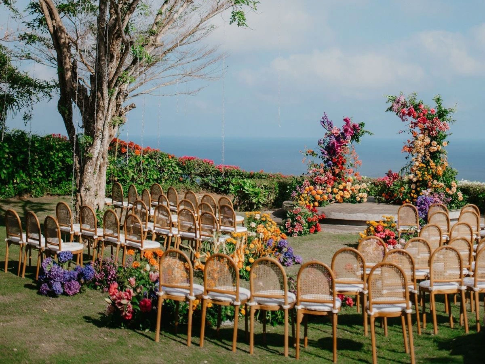
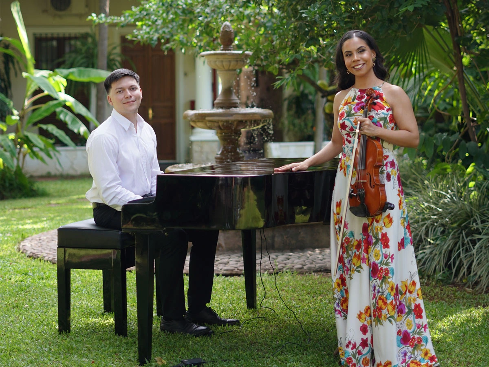
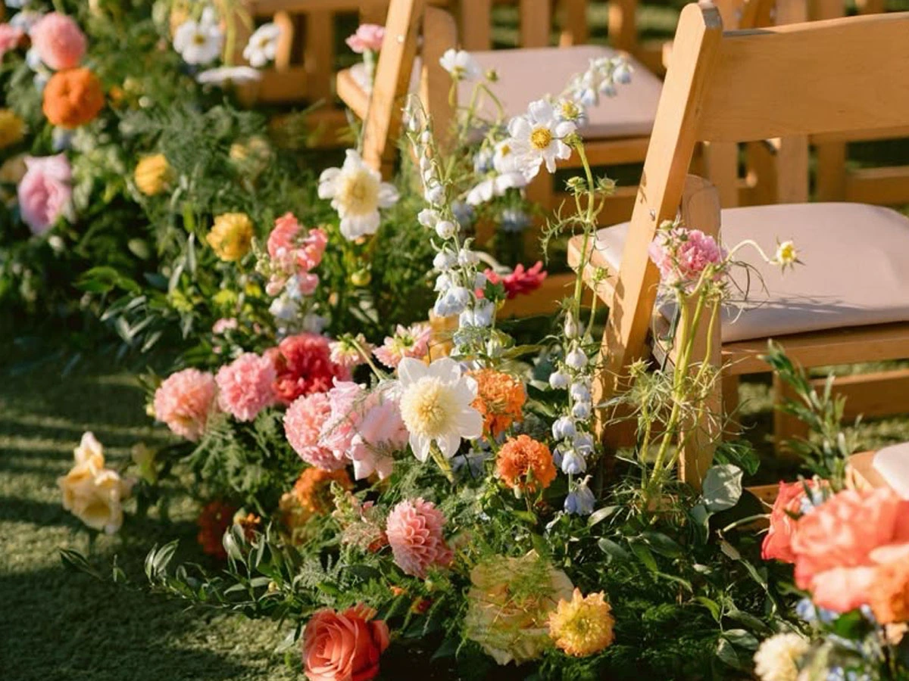

Galería de boda
Historia real
Un álbum editorial pensado para mostrar los momentos más sensibles de cada boda con una estética uniforme, limpia y lista para crecer con nuevas historias reales.






Galería de boda
Un álbum editorial pensado para mostrar los momentos más sensibles de cada boda con una estética uniforme, limpia y lista para crecer con nuevas historias reales.


